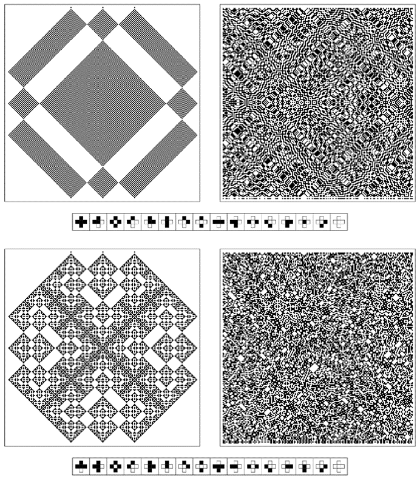

9.8 空间和时间的关系
为了建立物理学的终极理论，我们需要理解空间和时间的真正本质。我相信，在这里，再次用程序思维的想法可以提供一些至关重要的见解。
在我们的日常经验中，空间和时间似乎非常不同。例如，我们可以或多或少地以我们选择的任何方式从空间中的一个点移动到另一个点。但我们似乎被迫以非常特定的方式前进。然而，尽管存在这些明显的差异，当今几乎所有基础物理模型都是建立在空间和时间在某种程度上根本相同的想法之上的。
但是，对于本书中我讨论的大多数基于程序的系统来说，这当然不是真的。因此，例如，在元胞自动机中，从空间中的一个点移动到另一个点只是对应于从一个单元格转移到另一个单元格。但从时间的一个点到另一个点的移动实际上涉及应用元胞自动机的规则。
然而，当我们绘制元胞自动机的行为图时，我们仍然倾向于以相同的视觉方式表示空间和时间——空间在页面上横向延伸，时间则向下延伸。事实上，将空间位置的概念扩展到时间位置的概念的想法在科学思想中已经存在了五个多世纪。
但在过去的一个世纪里，发生的事情是，空间和时间被认为在更基本的层面上更为相似。正如我们稍后将在本章中讨论的那样，这一现象的主要根源在于相对论理论中的某些空间和时间方面似乎变得可以互换。由此产生了时空连续体的概念，其中时间仅作为第四维出现，就像空间的三个普通维度一样。
因此，在像元胞自动机这样的系统中，人们通常想象在每个时间步骤中，系统都会以某种方式产生一个新的、独立的状态，而现代物理学则更倾向于将整个宇宙的历史视为在时空的四个维度中展开的单一结构。
那么，是什么决定了这一结构的形式呢？
(p 481)
物理定律实际上为结构提供了一系列约束。虽然这些定律传统上是用复杂的数学方程来表述的，但它们的基本性质与我在第5章末尾讨论的黑白细胞阵列上的简单约束相似。但现在，物理定律不仅仅是在空间中定义约束，还可以被认为是在空间和时间中可能发生的事情上定义约束。
就像空间一样，我坚信时间本质上是离散的。从上一节关于空间网络的讨论中，人们可能会想象，也许整个宇宙在时空中的历史可以用一个巨大的四维网络来表示。
与第5章末尾的系统类似，一个简单的模型将是这个网络由这样的约束决定：围绕其每一个节点，其他节点的总体布局必须与某个特定的模板或模板集相匹配。
然而，就像在第5章中一样，结果往往是很难找出哪些网络（如果有的话）能满足这类特定的约束。不过，对面页面上的图片仍然展示了相当多模板选择的结果——在每个例子中，模板中的悬空连接都被视为连接到不属于模板本身的节点。
图片（a）和（b）展示了两个非常简单的模板所发生的情况——只涉及一个节点。在情况（a）中，除了节点直接与自己相连的网络外，所有网络都被允许。在情况（b）中，只允许显示的单个网络。
对于涉及距离为一个节点的模板，总共有11个不同的非平凡情况。其中，有8种情况不允许形成完整的网络，如图（e）所示。但事实证明有三种情况——如图（c）、（d）和（f）所示——可以形成完整的网络，并且在每种情况下，人们都会发现，实际上允许一个相当简单的无限网络集。
然而，为了建立一个有意义的宇宙模型，很可能发生的情况是，基本上只有一个网络能满足所有的约束，而这个网络必须代表我们宇宙所有复杂的时空历史。
(p 482)
由约束确定的网络示例。在每种情况下，所展示的网络都必须满足约束条件，即每个节点周围的形状必须与所示的模板相对应，以确保模板中的悬空连接不会相互连接。这些图片包括了所有涉及节点距离最多为2且可以形成完整网络的14个模板。在大多数情况下，如果可以形成这样的网络，那么就可以形成一个无限的网络序列。但在情况（b）、（h）、（i）和（j）中，只允许单个网络。这里展示的网络约束系统是第5章末尾讨论的基于约束的二维系统的类似物。
(p 483)
那么，如果允许模板包含距离为2的节点，会发生什么呢？总共有690个不同的非平凡模板——其中681个像情况（g）一样，不允许形成完整的网络。然后，剩下的6个模板再次允许一个无限的网络序列。但是有三个模板——如情况（h）、（i）和（j）所示——只允许单个网络。然而，这些网络相当简单，实际上最复杂的网络——情况（i）——只有20个节点，对应于一个十二面体。
那么，是否确实存在相当简单的约束集，最终只允许一个高度复杂的网络，或者可能是一系列相似的网络？我倾向于对此表示怀疑。因为我们在第5章中的经验是，即使在黑白方格阵列这种更为严格的情况下，也很难找到能够成功迫使除非常简单模式以外的任何模式出现的约束。
那么，这对我们获得宇宙中看到的那种复杂性意味着什么呢？我们并没有在像本书中讨论的元胞自动机这样的系统中获得显著复杂性的困难。但是，这些系统并不是通过需要满足约束来工作的，而是通过反复应用明确的规则来工作的。
那么，最终将宇宙视为一个由一组约束决定其形式的时空中的单一结构是否合理呢？我们是否应该真正想象宇宙的完整时空历史总是以某种方式存在，而随着时间的推移，我们只是在探索它的不同部分？或者我们应该认为宇宙——更像元胞自动机这样的系统——明确地随时间演化，以至于在每个时刻，宇宙的一个新状态实际上被创造出来，而旧的状态则消失了？
基于传统数学方程（其中空间和时间只是作为抽象的符号变量出现）的模型从未在这两种观点之间做出太多区分。但是，在试图理解宇宙的最终基础机制时，我认为人们不可避免地要对这两种观点进行区分。
我坚信第二种观点最有可能为我们的宇宙提供一个有意义的基础模型。虽然这种观点更接近我们对时间的日常感知，但它似乎与当今物理学中大部分内置的空间和时间之间的对应关系相矛盾。那么，人们可能会想，它如何能与物理学中已经完成的实验保持一致呢？
(p 484)
下面图片所示的一种可能性是，有一个系统根据明确的规则随时间演化，但这些规则在时间和空间之间建立了一种对称性。

展现空间和时间之间对称性的一维元胞自动机示例。每幅图片都可以从顶部的初始条件开始生成，然后不断向下重复应用元胞自动机规则进行演化。所展示的特定规则是可逆的二阶规则，编号为90R和150R。
(p 485)
但我非常怀疑我们宇宙的基本规则中存在任何如此明显的空间和时间之间的对称性。相反，我所期望的与我们在本书中多次看到的情况非常相似：即使在最底层，空间和时间之间没有直接的对应关系，但当人们以适当的方式观察实际实验所探测到的大尺度时，这种对应关系仍然会出现。
正如我将在接下来的几节[9, 10, 11, 12]中讨论的那样，我怀疑对于许多目的来说，宇宙的历史实际上可以由某种时空网络来表示。但这种网络的形成方式实际上对空间和时间进行了相当不同的处理。特别是——就像元胞自动机系统一样——网络可以通过从某些初始条件开始，然后反复应用适当的底层规则来逐步构建。
任何这样的规则原则上都可以被认为是为时空网络提供了一组约束。但重要的是，没有必要进行单独的搜索来找到满足这些约束的网络——因为规则本身立即定义了一个构建必要网络的程序。